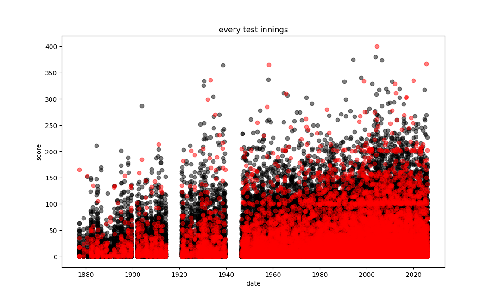
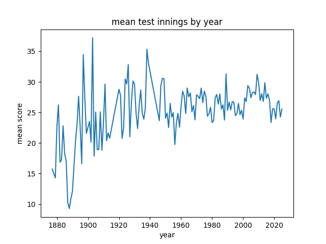
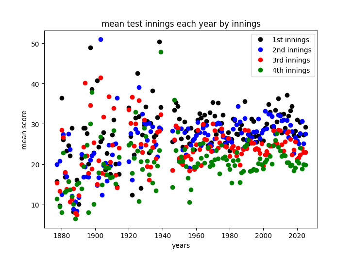

homepage
sports
cricket is one of the best sports on Earth. the tension, the drama, the skill, the stats, the drinking. it has truly got something for everybody.
in this page i will put some of the interesting cricket stats ive found.
last updated: 22/12/25
Test Batting
for starters i scraped all individual test batting innings from espncricinfo (goated website). this includes every test innings from every batsmen including ICC World XI matches.

this is a cool starting place. so ive plotted not out innings in red, out in black. immediately i look to the top and see Brian Lara's 400* in 2004 and the massive gaps when the world wars were on.
the next thing i see, is the lines of not out at 100 and 200. this makes a lot of sense captains will let there batsmen get 100*/200* before declaring.
finally, there appears to be a general trend upward, this could be due to a few things: better bats, more games with more nations, the improvement of tail enders batting.
we can check further this last point by looking at the mean score each year.


firstly wow cricket must have sucked in 1888, an average batting score of 9.266. just exhilerating im sure. ofc i know cricket from 1888 and today are effectively different sports, still funny.
anyway, this suggests to me that the apparent increase in the first plot is purely because there is more cricket, not an apparent increase in skill.
i mean the don is the nearly twice as good as the next best batsmen of all time and he played nearly 100 years ago, so i guess i shouldnt have expected this.